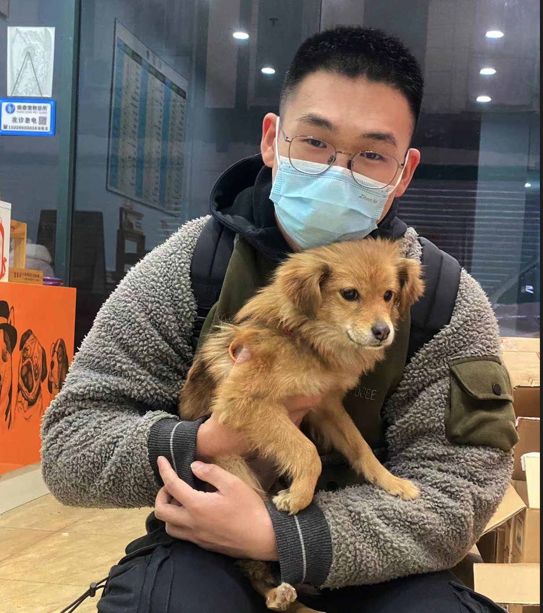
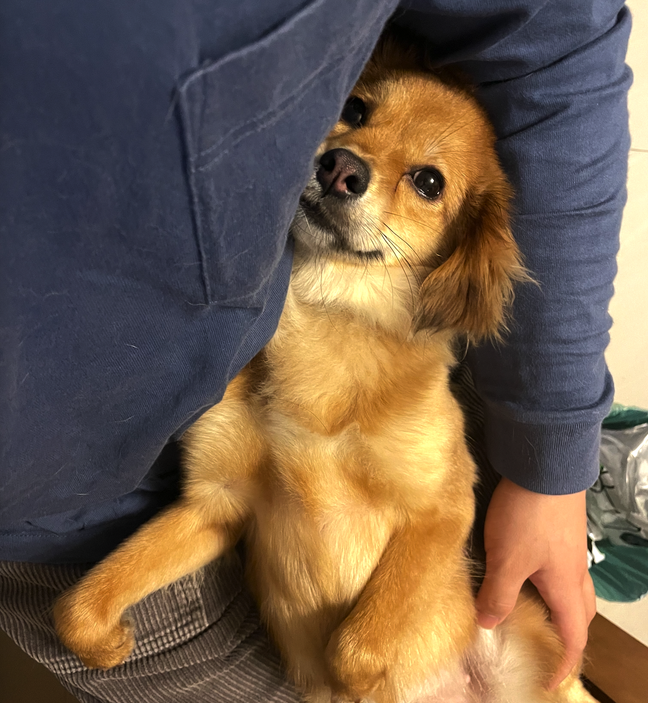
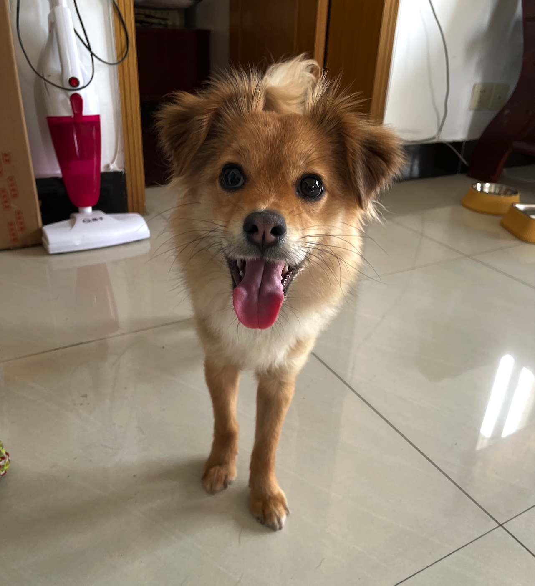
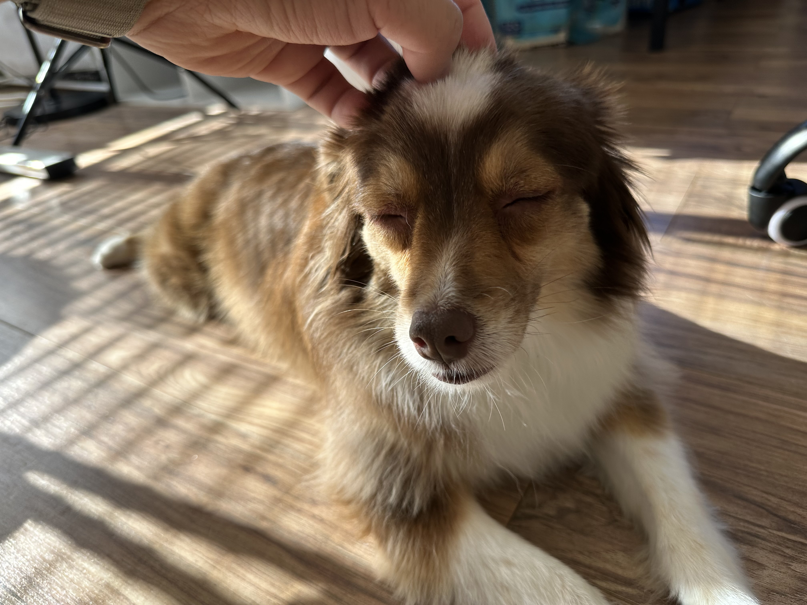
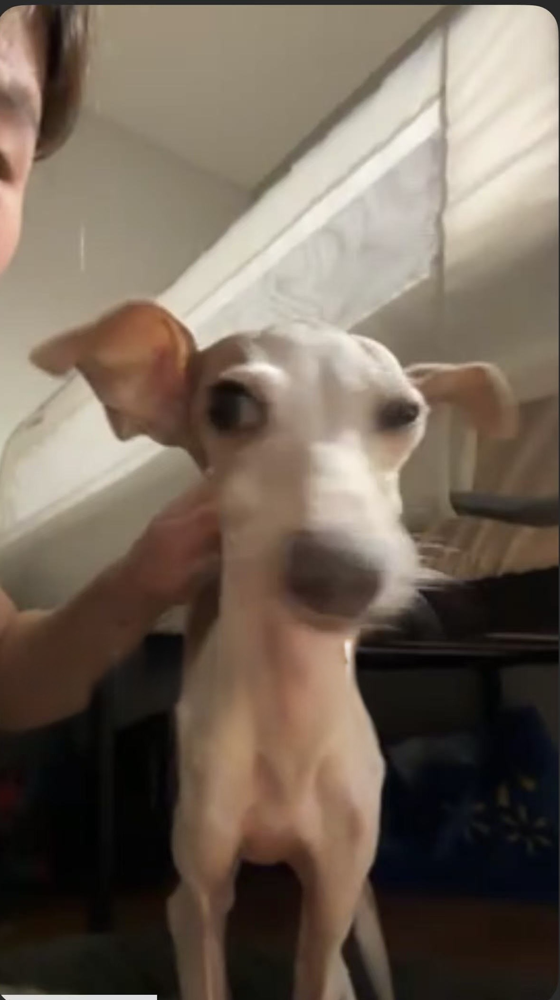
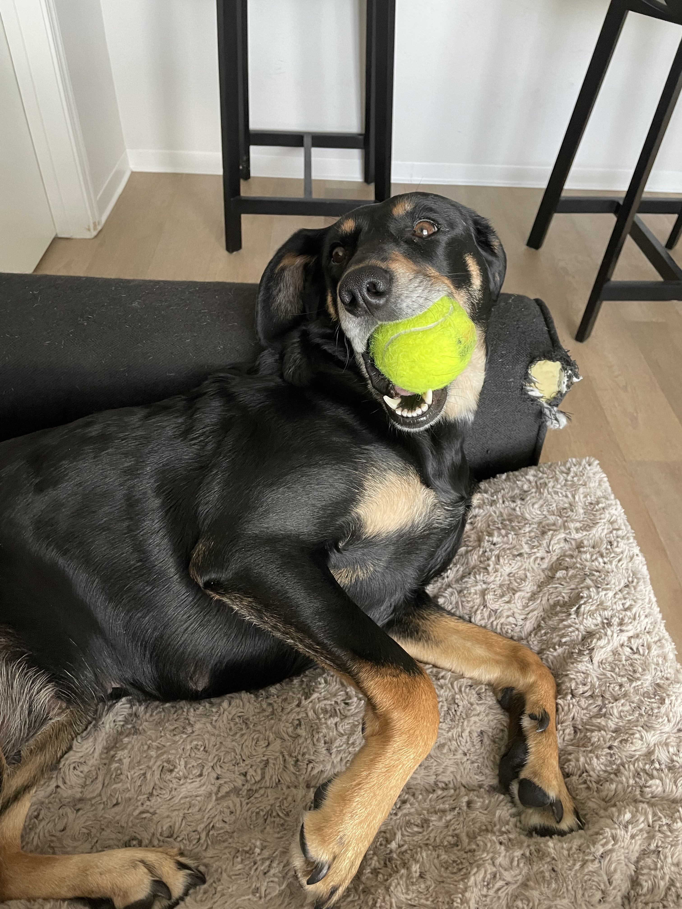

My Animal Friends 🐾
Adopted



Orange 🍊
Species: Dog
Breed: Chinese Native Dog
Adopted: December 2021, Shanghai
Orange is a lovely Chinese native dog who joined our family in December 2021.
She is shy, but very friendly! Always ready for adventures!
She stays with my parents now.
Fostered

Shiyi (十一)
Species: Dog
Breed: Mini Australian Shepherd
Shiyi is my PhD advisor's dog. I have fostered her several times during my advisor's travel. She is very clingy.
She has a unique eating habit: only eats one piece of dog food at a time, and finishes her meal throughout the day!
Virtual Friend

Zino
Species: Dog
Breed: Italian Greyhound
Zino is an Italian Greyhound who belongs to my friend Zoe. Although we have never met in person,
I still love her very much! A special virtual friend who brings joy from afar.
Fostered

Snoopy
Species: Dog
Breed: Schnauzer
Snoopy is a Schnauzer who I helped foster in 2023 when I came to America.
I assisted in reuniting Snoopy with his owner. A wonderful and friendly companion!
Fostered

Dora
Species: Dog
Breed: Not sure
Dora was my former roommate's dog. She is very energetic and loves to play,
but doesn't like hugs!